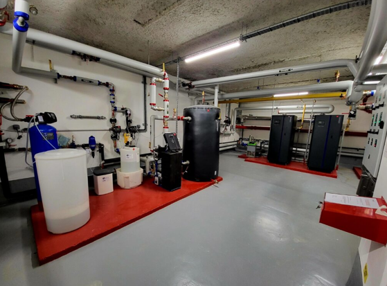
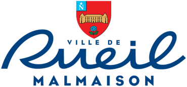
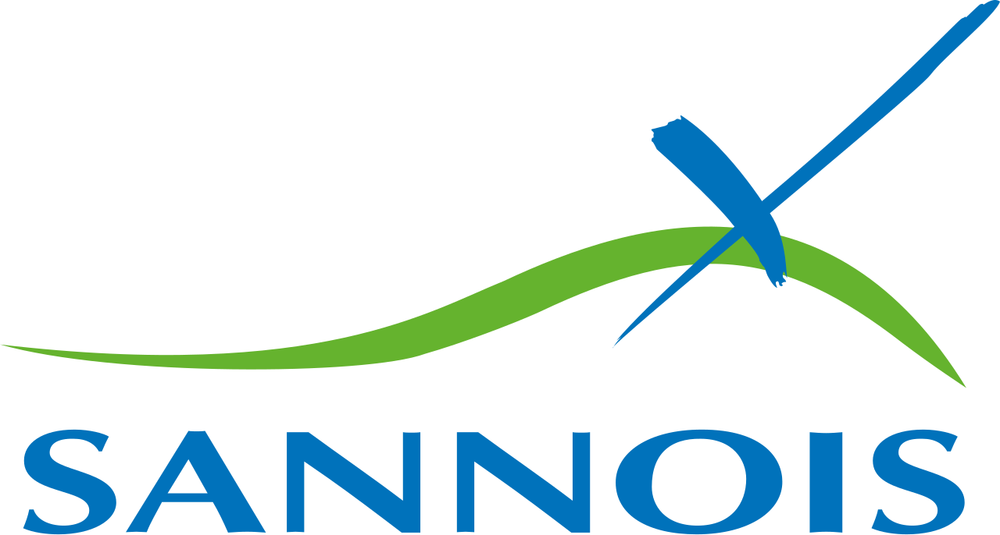

Exploitation et maintenance
Contrats de services, engagements de performance, indicateurs et reporting.
Nous concevons, réalisons et maintenons vos solutions avec exigence de résultat : qualité, délais, sécurité et performance.
Nos services
Contrats de services, engagements de performance, indicateurs et reporting.
Rénovation des installations CVC, réduction des coûts, augmentation du confort des usagers.
En savoir plusContrats ...
Texte déroulant : il apparaît au clic et se replie au clic suivant, sans JavaScript.
Nos domaines d'intervention
Notre secteur d'intervention
Grâce à plus de 60 ans d’expérience et à des équipes qualifiées (monteurs, chauffagistes, frigoristes, techniciens CVC), VES intervient sur l’ensemble du cycle de vie des installations énergétiques. Notre expertise couvre la maintenance, la rénovation, la performance énergétique et l’accompagnement des collectivités, bailleurs sociaux, copropriétés et bâtiments publics.
Rénovation complète de chaufferies
- Remplacement de chaudière gaz, fioul, bois ou vapeur,
- Modernisation des réseaux hydrauliques et équipements,
- Optimisation des régulations et automatismes,
- Installation solaire thermique
Transition énergétique
- Conversion fioul à gaz,
- Conversion fioul/gaz à RCU (Vapeur / Eau surchauffé),
- Intégration d’énergies renouvelables (PAC, hybridation, solaire thermique, récupération de chaleur)

Nos engagements RSE
La politique RSE de VES s’inscrit dans les engagements VINCI Energies et repose sur cinq axes structurants : éthique, environnement, ressources humaines, ancrage territorial et gouvernance. Au-delà des obligations réglementaires, VES met en œuvre des actions concrètes visant à réduire son impact carbone, améliorer la qualité de vie au travail, renforcer la sécurité, et promouvoir des pratiques responsables.
Environnement & réduction de l’empreinte carbone
- Transition progressive de la flotte automobile vers des véhicules 100% électriques.
- Mise en place de solutions techniques sobres : récupération de chaleur, PAC, optimisation régulation, réglages réseaux.
- Sensibilisation aux gestes écoresponsables pour l’ensemble des collaborateurs.
Gestion responsable des déchets
- Tri selon les 7 flux réglementaires.
- Suivi administré via Trackdéchets pour tous les déchets dangereux.
- Traçabilité complète (BSDD), reporting client, valorisation systématique lorsque possible.
Qualité de Vie au Travail & sécurité
- Formation continue des équipes : jusqu’à 6% de la masse salariale dédiée chaque année.
- Prévention sécurité renforcée : causeries, EPI, analyse d’accidents, culture sécurité VINCI.
- Programmes intégration collaborateurs (verticale et transversale), juste rémunération équitable et transparente.
Références
Ville de Rueil Malmaison
Exploitation et maintenance (P2, P3, GER) CVC/Multi technique de bâtiments de 6 groupes scolaire et 1 bâtiment administratif pour une durée de 10 ans.
Lauréats en 2023 du MGPE de Rueil‑Malmaison, nous accompagnons la ville dans un plan pluriannuel de rénovation et d’amélioration énergétique de son patrimoine. Le marché porte sur 7 établissements et vise ~30 % d’économies d’énergie à périmètre constant, avec des actions ciblées sur la performance des installations, le pilotage et le suivi des usages. |
 |
Le besoin client
|
Notre solution
|
Engagements
|
Ville de Versailles
Exploitation et maintenance (P2, P3, P5) des installations CVC des bâtiments communaux de la Ville de Versailles.
Dans le cadre du marché d’exploitation–maintenance de la Ville de Versailles, nous assurons la conduite, la maintenance préventive et corrective ainsi que le suivi des installations de chauffage, ventilation et climatisation d’un parc d’environ 70 bâtiments communaux. |
Le besoin client
|
Notre solution
|
Engagements
|
Centre Cyrano de Bergerac – Ville de Sannois
Travaux de rénovation des installations de Chauffage, Ventilation et Climatisation (CVC) et réhabilitation énergétique du Centre Cyrano de Bergerac.
|
Dans le cadre de cette opération, nous sommes intervenus sur le Centre Cyrano de Bergerac,
équipement culturel majeur de la Ville de Sannois, afin de moderniser les installations
techniques et d’améliorer significativement la performance énergétique du bâtiment.
|
 |
Le besoin client
|
Notre solution
|
Bénéfices apportés
|
À propos
La société VES, créée en 1961, bénéficie d’une expérience reconnue dans l’exploitation et la maintenance des réseaux et installations énergétiques. Spécialisée dans les bâtiments publics et collectivités, l’entreprise développe ses activités dans l’ouest francilien.
VES appartient aujourd’hui à la marque VINCI Facilities, dédiée au Facility management et à la maintenance CVC/Multi technique des bâtiments.
Jérôme Bédier
📧 jerome.bedier@vinci-facilities.com
📞 06 88 30 40 37
📧 gnvhft@entreprise.fr
📞 01 23 45 67 91
Ou bien envoyez votre demande ci-dessous :

 La norme ISO 45001 est conçue pour améliorer la santé et la sécurité au travail, elle contribue au bien-être des entreprises tout en offrant un cadre structuré pour gérer leurs responsabilités en matière de santé et de sécurité. La norme ISO 45001 offre aux entreprises un cadre efficace pour gérer et améliorer leurs risques et performances en matière de santé et de sécurité au travail. Ce système de management s’intègre directement aux processus clés de l’entreprise, encourageant une implication accrue de la direction. Il met également en avant l’importance d’engager le personnel dans la mise en œuvre et le fonctionnement du système, favorisant ainsi une culture de sécurité partagée.
La norme ISO 45001 est conçue pour améliorer la santé et la sécurité au travail, elle contribue au bien-être des entreprises tout en offrant un cadre structuré pour gérer leurs responsabilités en matière de santé et de sécurité. La norme ISO 45001 offre aux entreprises un cadre efficace pour gérer et améliorer leurs risques et performances en matière de santé et de sécurité au travail. Ce système de management s’intègre directement aux processus clés de l’entreprise, encourageant une implication accrue de la direction. Il met également en avant l’importance d’engager le personnel dans la mise en œuvre et le fonctionnement du système, favorisant ainsi une culture de sécurité partagée.